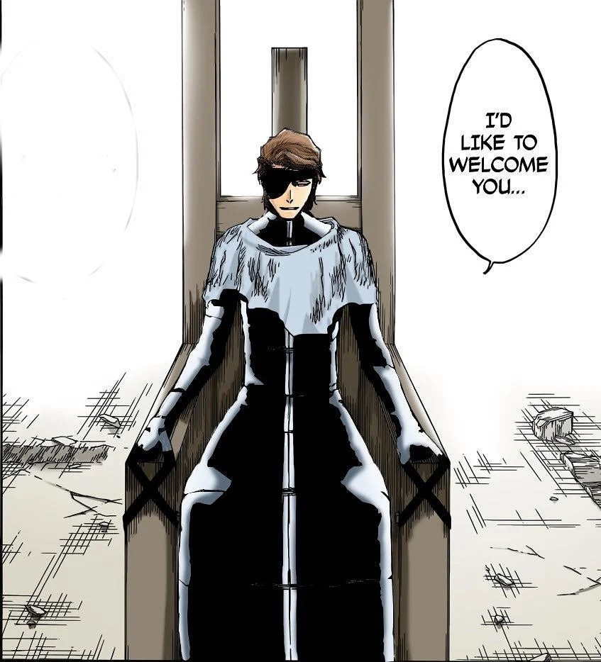

Odin Recipes


Sauce-Bleach
Hello! Welcome to my recipe page. If you are here, that means one of two things: you are either incompetent at cooking, like me, or you simply wish to expand your cooking palette. Either way, look no
further! Here we have three different, delicious recipes linked at the bottom that will definitely aid you in your cooking endeavors. Try them out, experiment a little, and have fun making delicious food!